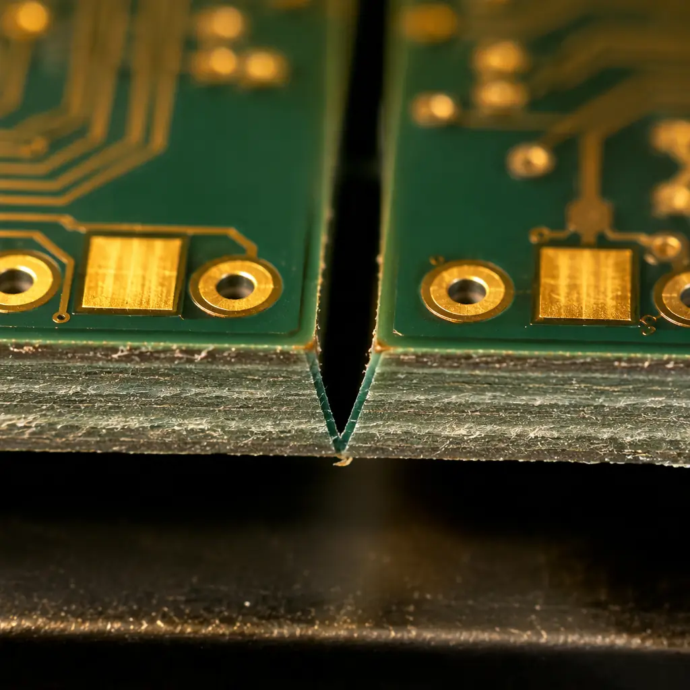
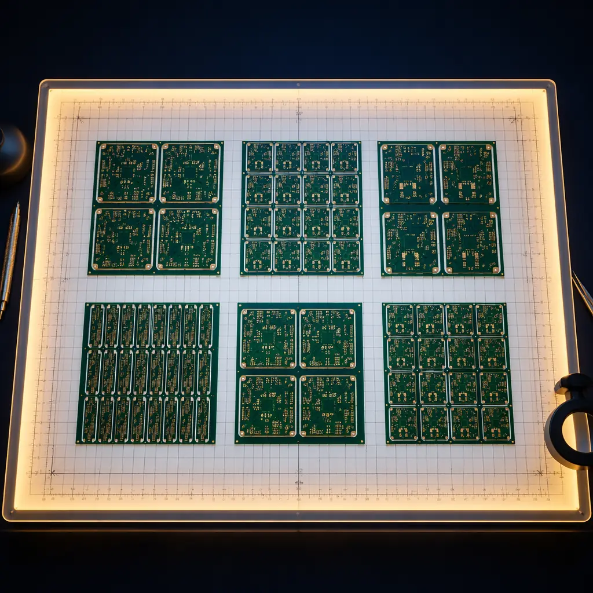

PCB panelization is one of the most overlooked cost levers in electronics manufacturing. A 10% improvement in panel utilization can reduce your per-unit cost by 8-12% — yet most procurement managers never discuss panel layout with their manufacturer. This guide explains exactly how panelization works, the three main methods, and how to optimize your design for maximum cost efficiency.
At Huaxing PCBA, our engineering team reviews over 800 panel designs every month across 8 SMT lines. We've seen the same costly mistakes repeated across industries — from automotive ECUs to IoT sensor modules. Here's what every procurement manager and design engineer needs to know before sending their next PCB order to production.

What Is PCB Panelization and Why It Directly Affects Your Quote
Panelization is the process of grouping multiple identical (or different) PCB designs onto a single manufacturing panel for production. Rather than handling individual boards one at a time, SMT pick-and-place machines, reflow ovens, and AOI systems process entire panels — dramatically improving throughput and consistency.
The core metric that determines your cost is panel utilization rate: the percentage of the panel surface area that contains actual boards versus wasted space (borders, gaps, tooling strips). Standard panel sizes in Chinese PCB factories are 18 × 24 inches (457 × 610 mm) and 21 × 24 inches (533 × 610 mm). The math is straightforward:
Panel Utilization Formula: Utilization Rate = (Total Board Area × Boards Per Panel) ÷ (Panel Area) × 100%. A panel with 75% utilization vs 90% utilization on a 1,000-unit order can mean a 17% cost difference — approximately $850 on a typical $5,000 batch.
Panel utilization also affects your minimum order quantity. Higher utilization means each panel holds more boards, which means fewer panels are needed to hit your target volume — and since tooling and setup costs are amortized across panels, this directly lowers your per-unit price at any order size.
Panelization Methods: V-Scoring vs Tab Routing vs Stamp Holes
There are three primary panelization methods, and choosing the wrong one for your board geometry can increase cost by 15-30%. Here's how to match the method to your design:
| Method | Best For | Edge Quality | Relative Cost | Min Board Spacing |
|---|---|---|---|---|
| V-Scoring | Rectangular boards, straight edges | Smooth, slight groove residue | Lowest | 0 mm (shared cut line) |
| Tab Routing | Irregular shapes, rounded corners | Smooth with mouse-bite marks | Medium | 2.0-2.4 mm |
| Stamp Holes | Castellated modules, small PCBs | Semi-circular edge plating | Highest | 0.5-1.0 mm |
V-Scoring: The Cost-Effective Workhorse
V-scoring uses a precision blade to cut a V-shaped groove approximately 1/3 of the board thickness deep along straight lines. After assembly, panels are separated by a depaneling machine that snaps along the groove. V-scoring is the lowest-cost method because multiple boards share the same cut line — zero wasted material between boards.
However, V-scoring has strict limitations: the cut must be a straight line from edge to edge of the panel, and components must maintain a minimum 5 mm clearance from the score line to avoid cracked solder joints during depaneling. Boards with curved edges, cutouts, or non-rectangular shapes cannot use V-scoring.
Tab Routing: Flexibility for Complex Geometries
Tab routing uses a CNC router to mill around each board's perimeter, leaving small perforated tabs ("mouse bites") that hold the board in the panel frame. This method works for any board shape — round, L-shaped, or boards with internal cutouts — but the router bit requires clearance between boards, reducing panel utilization by 3-8% compared to V-scoring.
Standard tab specifications: 3-5 tabs per board edge (more for heavy boards), tab width 1.6-2.0 mm, with 3-5 perforation holes per tab at 0.5-0.8 mm diameter. For heavy copper boards (4oz+), wider tabs of 2.5-3.0 mm are recommended to prevent premature breakage during handling.
Stamp Holes: For Castellated Edge Modules
Stamp holes are used primarily for small modules with castellated (half-plated) edge connections — common in Bluetooth/WiFi modules, sensor breakout boards, and IoT edge devices. The board is connected to the panel by a series of plated half-holes that become the edge connectors after depaneling. This is the most expensive method due to the additional plating step and tighter process control requirements.
Design Rules for Panel-Ready PCB Layouts
Submitting a panel-ready design (rather than individual board files) can reduce your engineering review cycle by 2-3 days and eliminate back-and-forth with the manufacturer. Here are the key specifications every designer should follow:
Panel Border Width: 12.7 mm Minimum
The panel frame needs sufficient width for conveyor rail gripping during SMT and reflow. Standard border is 12.7 mm (0.5 inch) on all four sides. For panels with heavy components (>100g total), increase to 15 mm to prevent sagging in the reflow oven.
Fiducial Marks: 3 Global + 2 Local Per Board
Place 3 global fiducials on the panel frame (outside the board area) for overall alignment, plus 2 local fiducials per individual board for fine positioning. Fiducial diameter: 1.0-1.5 mm, with a 2-3 mm clear copper-free zone around each mark. Missing or insufficient fiducials is the #1 cause of SMT placement errors on new designs.
Tooling Holes: 3.2 mm Diameter, Non-Plated
Include 4 tooling holes (one near each corner of the panel frame), 3.2 mm diameter, non-plated. These are used for mechanical fixturing during drilling, routing, and electrical test. Position tolerance: ±0.05 mm from the panel datum.
Component-to-Edge Clearance: 5 mm Minimum
Keep all SMT components at least 5 mm away from V-score lines and 3 mm away from routed edges. Components near the breakaway zone experience mechanical stress during depaneling — capacitors and BGAs are especially vulnerable to micro-crack damage. For designs that must place components close to edges, specify post-depaneling AOI and X-ray inspection in your test plan.
Copper Balance: Maintain Symmetry Across the Panel
Uneven copper distribution causes warpage during reflow — especially on 2-layer and 4-layer boards where copper density varies between layers. Add copper thieving (dummy fill) on sparse layers to achieve within 15% copper density across the panel. Warped panels cause tombstoning, open joints, and can even jam conveyor systems.

How Panelization Requirements Differ by PCB Type
Different PCB technologies impose different constraints on panelization — a one-size-fits-all approach doesn't work. Here's how the four major PCB categories affect your panel design:
| PCB Type | Panelization Consideration | Typical Waste Factor |
|---|---|---|
| Standard FR-4 (1.6mm) | Standard V-scoring, 12.7mm border | 8-12% |
| HDI / Microvia | Laser-drilled alignment targets needed; tighter border tolerances (±0.05mm) | 12-18% |
| Heavy Copper (4oz+) | Wider tabs (2.5mm), extra tooling holes, grain direction alignment | 15-20% |
| Flex / Rigid-Flex | Stiffener frame required; no V-scoring; specialized depaneling tooling | 18-25% |
For HDI boards with laser-drilled microvias, panel alignment targets must be positioned with ±0.05 mm precision because the laser drill references panel fiducials. Misalignment at the panel level cascades into via-pad misregistration on every board in the batch. This is why HDI panels typically have 2-4 extra fiducial pairs beyond the standard count.
Flex and rigid-flex circuits require a completely different approach: the flexible sections cannot be V-scored or routed with standard tooling. Instead, a rigid stiffener frame holds the flex portion flat during SMT assembly, and specialized laser or die-cutting separates the boards afterward. Expect panel utilization to drop to 70-78% for flex designs.
Procurement Tip: When requesting quotes, ask your manufacturer to provide the panel layout drawing showing the utilization calculation. A transparent supplier will share this — if they won't, you can't verify you're paying for value, not waste. At Huaxing PCBA, every quote includes the panelization plan with utilization percentage.
Common Panelization Mistakes That Inflate Your PCB Cost
After reviewing thousands of customer designs, these are the five errors we see most frequently — each one adds unnecessary cost:
Ignoring FR-4 Grain Direction
FR-4 laminate has a grain direction (warp direction) that affects mechanical strength. Boards should be oriented so the longer dimension aligns with the grain — otherwise, panels warp during reflow, especially on single-sided SMT designs. Warped panels = rejection rates up to 5%.
Placing Heavy Components Near V-Score Lines
Large BGAs, transformers, and electrolytic capacitors within 5 mm of a V-score line experience mechanical shock during depaneling. We've seen cracked BGA balls that passed ICT but failed after 50 thermal cycles. The fix is simple: rotate the board 90° or shift component placement.
Insufficient Tab Width for Large Boards
Boards larger than 100 × 100 mm with only 3 tabs per edge often break loose during transport. Standard: 1 tab per 50 mm of edge length, minimum 3 tabs per side regardless of length. This is especially critical for heavy copper boards where board weight is 30-50% higher than standard FR-4.
Sending Individual Board Files Without Panel Instructions
If you send Gerber files for individual boards without specifying panelization preferences, the manufacturer chooses the cheapest option — which may not be optimal for your assembly process. Always include: preferred panelization method, maximum panel size your assembly line can handle, and any component clearance zones. A complete Gerber package with fabrication notes prevents this ambiguity.
Forgetting to Account for Depaneling Tolerance
After depaneling, board dimensions are typically ±0.15-0.25 mm different from the routed dimension due to the router bit kerf and breakaway edge roughness. If your enclosure has tight mechanical tolerances, specify the post-depaneling target dimension in your fabrication drawing — not the routed dimension.
How to Work With Your PCB Manufacturer on Panel Design
The most cost-efficient approach is to collaborate with your manufacturer early in the design phase. Here's a practical workflow:
Send Individual Board Gerbers + Assembly Requirements
Unless you have in-house panelization expertise, sending individual board files with a clear note that you want the manufacturer to propose the panel layout typically yields the best result. Include your assembly line's maximum panel handling size and any depaneling equipment constraints.
Request a Panel Layout Drawing for Approval
Before production begins, ask for a panel fabrication drawing (PFD) showing board placement, utilization calculation, fiducial locations, and tooling hole positions. Review it with your assembly team — a 10-minute review can prevent a batch of unbuildable panels.
Validate With a First Article Panel
For orders over $3,000, request a first article panel before committing to the full batch. Run it through your assembly line, verify depaneling quality, and confirm that all boards separate cleanly without component damage. This single step catches 80% of panelization issues before they become batch-level problems.
At Huaxing PCBA, our DFM engineering team reviews every panel design before production — at no extra charge. We check for the 5 common mistakes listed above, verify clearance rules against your component placement, and calculate the panel utilization rate. If we find a way to fit more boards on the same panel without compromising quality, we'll propose it. Compare our quotes against any supplier — you'll find the panelization transparency alone saves real money.
For project-specific panelization consultation, contact our engineering team with your Gerber files. Typical panel layout review turnaround: 24 hours with detailed DFM report.